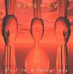

Home Artist links

Vitchev - Lost In A Fairy Tale
| Artist: | Vitchev |
| Title: | Lost In A Fairy Tale |
| Label: | self produced VHV111 |
| Length(s): | 38 minutes |
| Year(s) of release: | 2001 |
| Month of review: | [07/2001] |
Line up
Hristo Vitchev - guitars, keyboards, bass, programming and sequencing
Vladimir Vitchev - guitars, keyboards, drum programming and backing vocals
Tracks
| 1) | Lost In A Fairy Tale | 21.35
|
| 2) | Cryptonomicon | 6.12
|
| 3) | Allergic Reaction | 5.08
|
| 4) | Sahara 2170 | 5.26
|
Summary
An instrumental progressive rock duo from the San Francisco bay area,
the two members are originally from Bulgaria and after a seven year stay
in Venezuela, they moved to the States. The "band" Vitchev was started
only in 2000, and now their debut is ready.
The music
Opening with percolating acoustic guitar and synth we start the album
dreamily and tranquilly. Then the bass and drums get involved paving the
way for some heavy guitars and distorting keyboards. The music is quite
repetitive, but also appetizing with plenty of drive. Then the dreamy
stuff return with some friendly piano playing as well. The music is quite
light here, somewhat waltzy with quite a bit synth strings going. The twosome
does like to rock and they do so plenty interleaving the music with
rhythm guitars. At times I think the drums could have been a bit more dynamic
giving more life to the music. Around the nineminute mark the music becomes
a bit too mellow, the melodies less interesting than before. Time to start
anew then and this is more or less what they do after some more or less folky
intermezzo. The music at times reminds me of guitar hero music, but it is
more varied and versatile, and the melodies are generally better. Still I
a first and mostly reminded of a more melodic version of someone like Stu
Hamm. At three quarters of this 21 minute track the guitar playing is quite
intense, the following part is driven with nice drumming this time and some
wordless vocalizations. Toward the end the music becomes fluent with strong
chords on the guitar and an almost flamenco like verve with pacey piano
or dancing keyboard notes. Really very good. Along the way, as one might hope
the music does not stay the same, but the duo does reprise on some parts,
as they should to warrant calling it a single track. Comparisons I find hard to
give here: Bozzio Levin Stevens maybe, but a bit more melodic. Another one might
be Rockenfield, but darker and heavier.
After one single track we are more than halfway through the album. The second
track is Cryptonomicon. A dark opening to this one with sinister keyboards
and heavy rhythm guitars. One finds here mostly driving guitars, lots of notes
on those, and I am thinking mostly of Kopecky and yes the main reference:
Mastermind's Excelsior. Heavy hitting jazzrock influenced instrumental guitar
rock, but holding on to melody along the way. I guess the duo still does not
have the maturity of Mastermind in this, but I do think the duo will have more
appeal to lovers of guitar heroes.
Being a person of many allergies myself, I tend to be weary of the next track
called Allergic Reaction. The drums sound very dry on this guitar ridden track.
A bit too much guitar I think, too little of other things.
The final track has industrial monotonous drums, a meandering guitar with
some Arabic influences in the melody. This makes the repetitive music
sound quite distinctive. The song has a mysterious air to it.
Conclusion
Not a long album, but for the most part an enjoyable one. The duo at some
point reminded of Bozzio Levin Stevens and Mastermind on their wonderful
Excelsior. On other tracks I seem to hear guitar hero style instrumental rock,
but usually compositionally more interesting than that (fortunately).
What I found sometimes lacking was dynamics and groove in the drums, especially
on the, in prog respects, weakest song Allergic Reaction.
Very nice and at times such as the final third long opener and the follow-up
Cryptonomicon it is much better than nice.
© Jurriaan Hage